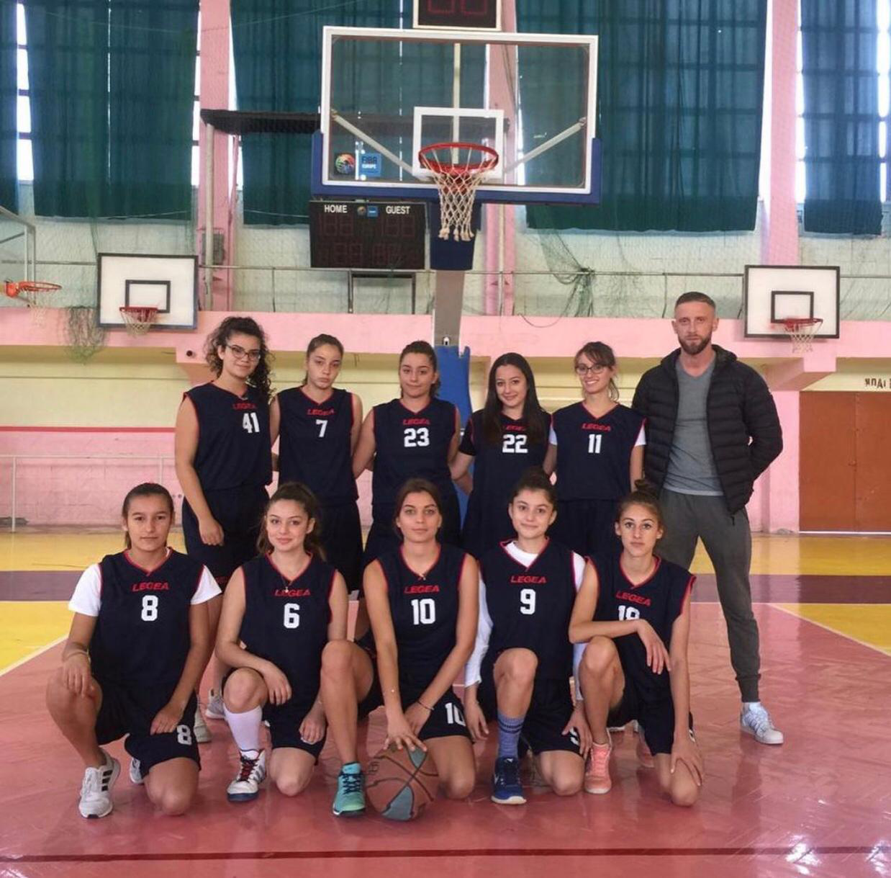
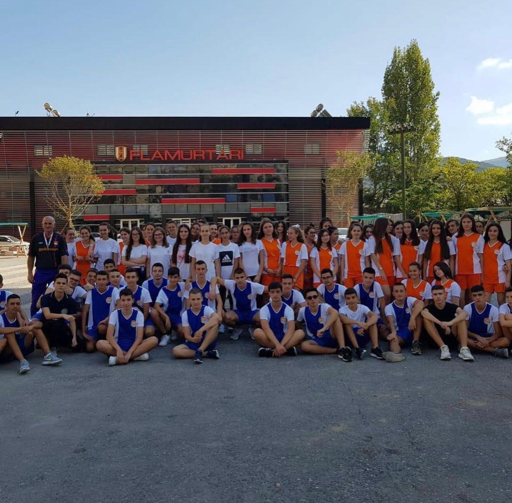
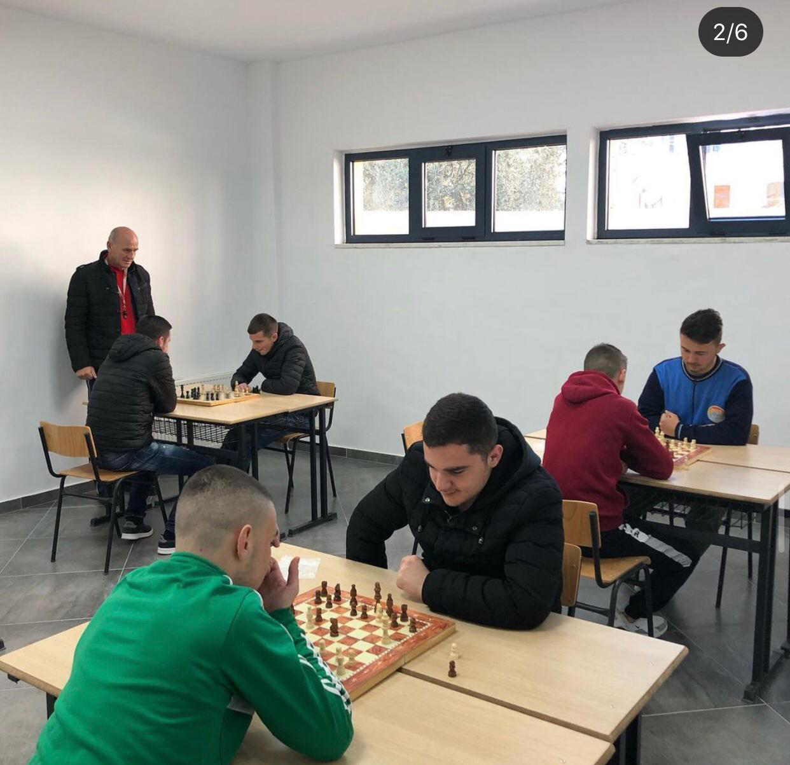
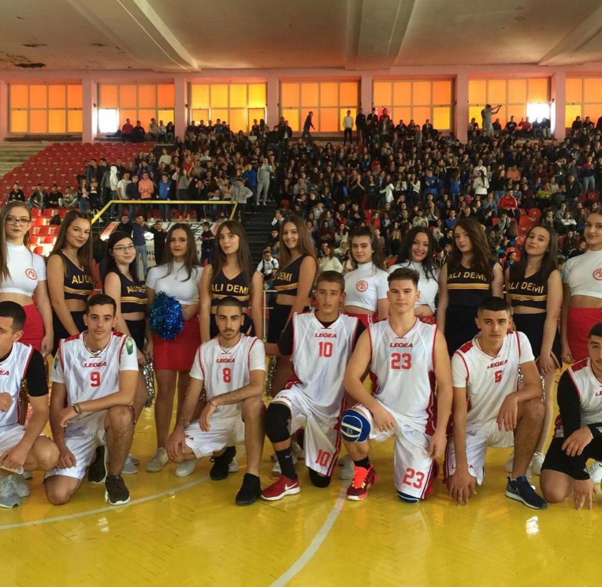

.png)



Sports
Sports and physical activities hold a very important position at our school,that is why a big amount of attention goes toward these activities. Throughout the years our shcool has had some of the most talented players in all different kinds of sport. From ping-pong(table tennis) to voleyball and football, Ali Demi High School has one of the most diverse and well designed Physical Education curriculums. Both teachers and students show a huge level of passion and hard work. Ali Demi prides itself in its achievements which are well deserved. We believe that sport and physical acitvity is very important for the body as well as for the students mental and psychological health
Cultural Activities
Ali Demi High School amongst other achivements and successes has a rich portfolio of cultural activities. Our school has given the students the possibility to express themseselves in variety of ways. Through different activities we have mangaed to bring out the best in our students and their talents. For example the book club is a very successful activity which consists of interested students and literature teachers but not only. These students even managed to win a national competition about the famous V.Hugho book "Les Miserables". Another form that our students express themselves is through theatre. We have one of the most talented group of young actors who have won national prizes and awards as well. Besides these we hold activities very often regarding different events and causes such as "The European Day of Languages", "The National Day of Albanian Language", Ali Demi "Workshop", "National Day of Risk Reduction from Natural Disasters" and a lot more.
Furthermore Ali Demi students have participated in first aid sessions held by The Red Cross Vlora. A lot of our students volunteer there representing themselves and their school making us proud.
School Trips
We believe that students and faculty members as well deserve the opportunity to sometimes take the lesson outside of the class. That is why here we also put a lot of effort in our school trips. They are a great way for students to blow off some steam and have a bit of fun with their peers but also a great way for an alternate education. School trips are held around Albania as well as outside of the cuntry. One of our greatest school trips was in Auschwitz, Poland on the 27th of January which is the "International Day of Commemoration in memory of the victims of the Holocaust
". During our visit we caught a glimpse of what was once one the most horrible buildings in the world. It was very educataionl for the students. They had the possibility to see what had happened with their own eyes and to get a better perception of what these people had to go through. When the students came back a few days later they held an exhibiton showing different photos, posters and displaying information about the tragedy of the Holocast. One of our students managed to capture this trip in the form of a video. Clik here... to watch this amazing and creative video.
Click here... to view more photos and vidoes of our activities
Another achievement in which we take pride in is our results in local and national olympiads in different school subjects
| Student | Subject | Grade | Position |
|---|---|---|---|
| Adea Begaj | Biology | 10th | 2nd |
| Lisea Bezati | Biology | 12th | 1st |
| Aleksia Beko | Literature | 11th | 1st |
| Elisa Bocaj | Mathematics | 12th | 2nd |
| Ina Likskendaj | Chemistry | 11th | 1st |
| Kristel Kacaj | Physics | 10th | 3rd |
| Henir Canaj | Chemistry | 10th | 3rd |
| Fabio Bajramaj | Mathematics | 11th | 1st |
| Rei Canodemaj | Informatics | 12th | 2nd |